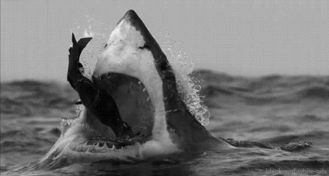
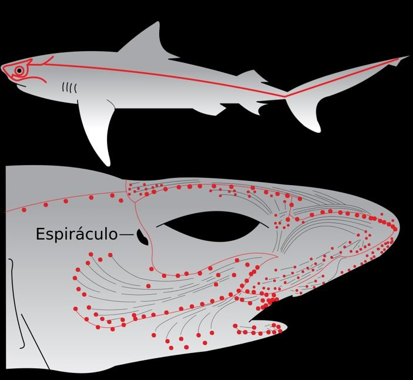
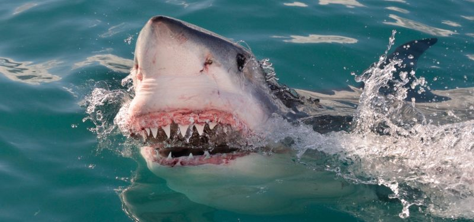
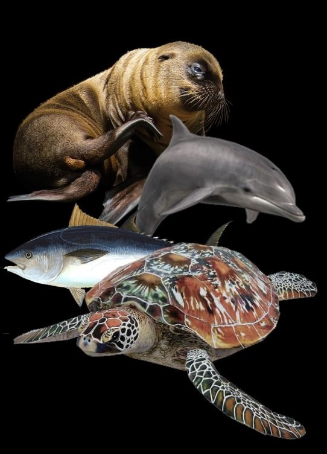

ALIMENTACIÓN
La mayoría de las especies de tiburones se alimentan de peces, crustáceos, moluscos, plancton, krill, mamíferos marinos y otras especies de tiburones. Los tiburones también tienen un sentido muy agudo del olfato que les permite detectar sangre en el agua a kilómetros de distancia. Algunas especies de tiburones, como el tiburón blanco, realizan un sorprende ataque a sus presas, generalmente focas y leones marinos, desde abajo.
  Las especies que habitan en el fondo marino han desarrollado la capacidad de una boca inferior. Otros atacan bancos de peces en un frenesí de alimentación, mientras que los grandes tiburones, como el tiburón ballena y el tiburón peregrino poseen alimentación de filtro, nadando a través del océano con la boca abierta, filtrando grandes cantidades de plancton y krill.
A continuación se pueden ver los grandes mamíferos marinos que constituyen la base de la dieta de los tiburones blancos adultos y la antes nombrada emboscada.
